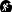

Kesselgrotte
Useful Information
| Location: |
Unnamed Road, 73642 Welzheim.
(48.8766916, 9.6001938) |
| Open: |
No restrictions. [2026] |
| Fee: |
free. [2026] |
| Classification: |
 Erosional Cave Caves Behind Waterfalls Frost Weathering Cave |
| Light: | bring torch |
| Dimension: | |
| Guided tours: | self guided |
| Photography: | allowed |
| Accessibility: | no |
| Bibliography: | |
| Address: | Kesselgrotte |
| As far as we know this information was accurate when it was published (see years in brackets), but may have changed since then. Please check rates and details directly with the companies in question if you need more recent info. |
|
History
Description
The Kesselgrotte is a waterfall cave. This is a special type of erosional cave formed by a waterfall. The waterfall flows over a resistant layer of rock and then drops down a step. The kinetic energy released carves out a hollow which fills with water called plunge pool, whilst the spray erodes the wall behind it. And as this layer of rock is softer and less resistant, a small cave forms here. It doesn’t really matter what type of rock it is, the weathering is mechanical, caused by the water itself and by frost action. The spray ensures that the crevices are always full of water and freeze in winter, as the water expands, it shatters the rock. Further away, where the spray does not reach, the crevices are often not filled with water and there is significantly less frost action.
Such waterfall caves are very common, most waterfalls have them. However, they are often very inconspicuous and rather unspectacular. In Germany, we have currently only listed this one. However, this type of cave is quite common in the Upper Stubensandstein, which is therefore also known as ‘cave sandstone’. The term Baldachinbildung (canopy formation) is also used when it is not a proper waterfall, but merely a trickle of water cascading over a rock ledge, constantly moistening the recessed groove. In this case, erosion is almost entirely absent and the formation is caused by frost action,
The Kesselgrotte is a stop on the Geologischer Pfad Welzheim (Welzheim Geological Trail). You can therefore either follow this signposted circular route, or drive from Welzheim along the L1150 towards Stuttgart, turn right at Eselshalden and follow the road to Lettenstich. From the end of the road, it is less than 300 metres to the cave.
As already mentioned, there are a number of similar caves in the area. They have names such as the Gallengrotte, Hohler Stein, Geistein and Schillergrotte.
 Search DuckDuckGo for "Kesselgrotte"
Search DuckDuckGo for "Kesselgrotte" Google Earth Placemark
Google Earth Placemark OpenStreetMap
OpenStreetMap
 Index
Index Topics
Topics Hierarchical
Hierarchical Countries
Countries Maps
Maps